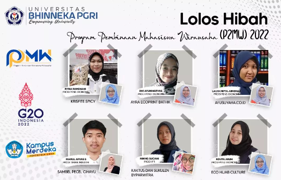

Selamat Mahasiswa dan Dosen Lolos Hibah Program Pembinaan Mahasiswa Wirausaha (P2MW) 2022
Selamat kepada seluruh mahasiswa dan dosen Universitas [Nama Universitas] (UBHI) yang berhasil lolos Hibah Program Pembinaan Mahasiswa Wirausaha (P2MW) 2022! Keberhasilan ini merupakan prestasi luar biasa dan menjadi bukti komitmen serta dedikasi yang tinggi dalam mengembangkan potensi dan keterampilan wirausaha.
Hibah P2MW tidak hanya memberikan apresiasi kepada para mahasiswa dan dosen, tetapi juga merupakan wujud dukungan untuk meningkatkan kualitas wirausaha di lingkungan kampus. Program ini memiliki peran penting dalam menciptakan ekosistem yang mendukung perkembangan ide-ide kreatif dan inovatif, sehingga dapat memberikan dampak positif bagi perkembangan ekonomi dan masyarakat.
Para mahasiswa yang berhasil meraih hibah ini tentu telah melalui proses seleksi yang ketat, yang mencakup penilaian terhadap gagasan bisnis, keberlanjutan, dan dampak yang mungkin dihasilkan. Dosen juga berperan sebagai pembimbing yang berharga dalam membantu mahasiswa mengembangkan ide-ide mereka menjadi proyek wirausaha yang tangguh.
Dengan meraih hibah ini, diharapkan para mahasiswa dan dosen dapat terus mengembangkan keterampilan, pengetahuan, dan jaringan yang dibutuhkan untuk merintis dan mengelola usaha mereka. Semangat wirausaha yang dimiliki oleh para penerima hibah diharapkan dapat menginspirasi dan memotivasi anggota akademis dan mahasiswa lainnya untuk terlibat dalam kegiatan serupa di masa depan.
Keberhasilan ini juga menciptakan peluang untuk memperluas kerjasama antara universitas, dunia bisnis, dan pemerintah dalam mendukung pengembangan wirausaha. Kolaborasi ini menjadi kunci untuk menciptakan lingkungan yang kondusif bagi inovasi dan pertumbuhan ekonomi berkelanjutan.
Sekali lagi, selamat kepada seluruh mahasiswa dan dosen UBHI yang berhasil meraih Hibah Program Pembinaan Mahasiswa Wirausaha (P2MW) 2022. Semoga prestasi ini menjadi langkah awal menuju kesuksesan yang lebih besar di bidang wirausaha. Teruslah berinovasi, berkembang, dan memberikan kontribusi positif bagi masyarakat dan bangsa.